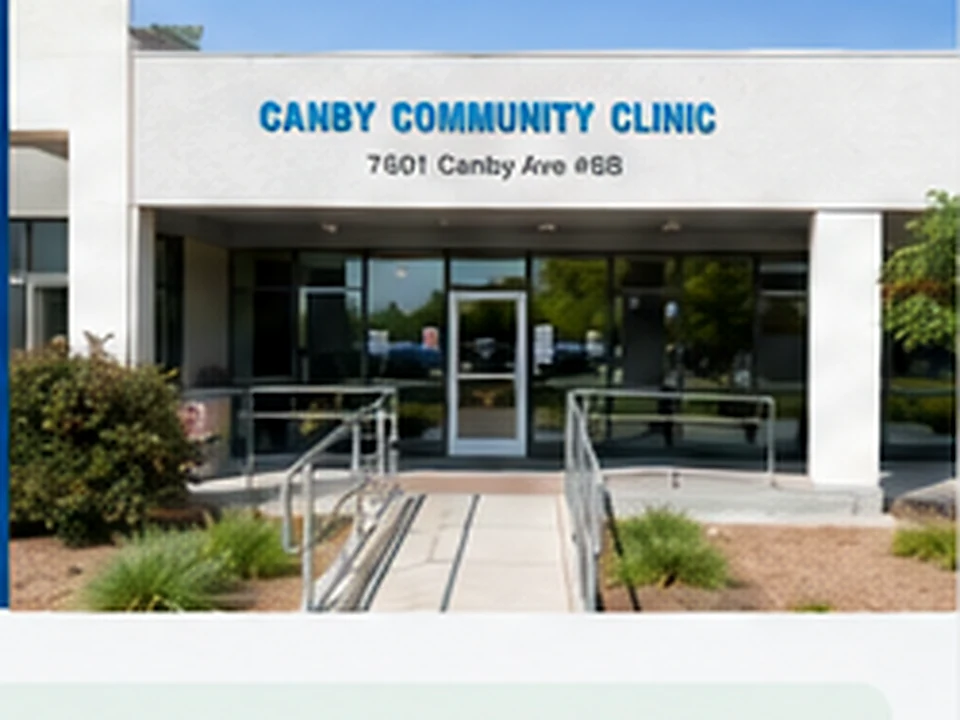
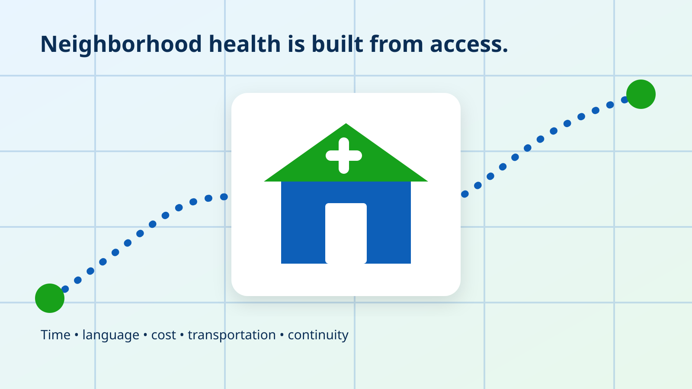
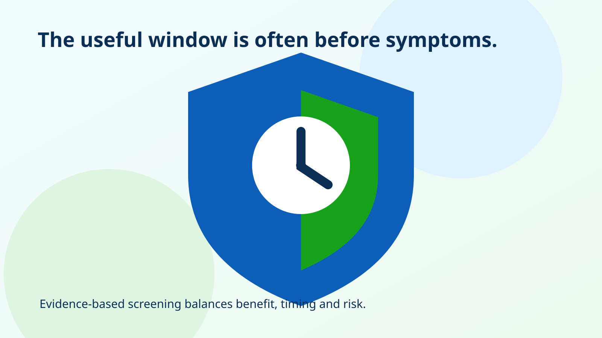

Primary care visits
Evaluation of common non-emergency concerns, preventive planning, medication review, and follow-up based on clinic availability.
Learn moreCanby Community Clinic, formerly Pura Vida Community Clinic, helps residents of Reseda and nearby communities understand available care, prepare for visits, and navigate practical next steps. Service availability and eligibility should be confirmed by phone.



The clinic should never promise services that cannot be confirmed. These pages explain the categories currently represented in clinic materials and tell patients to call before relying on availability.
Evaluation of common non-emergency concerns, preventive planning, medication review, and follow-up based on clinic availability.
Learn moreRisk-based screening conversations and selected measurements. Recommendations depend on age, history, and clinical judgment.
Learn moreHelp understanding outside laboratory, imaging, and specialty next steps when those services are recommended.
Learn moreMedication-list review, safer-use education, and practical information to help patients understand the plan.
Learn moreA visit should not end with vague instructions. Patients need to know what to bring, how results will be communicated, which services happen outside the clinic, and when to return.
How the clinic approaches accessConfirm the reason for your visit, appointment availability, eligibility, cost information, and whether the clinic can provide the service you need.
Bring identification if requested, medication containers or an accurate list, relevant records, and the questions you want answered.
Confirm who will contact you, how results are delivered, what outside services are needed, and when to return.
GitHub Pages can securely serve public information over HTTPS, but it is not a patient portal. This website does not ask for diagnoses, symptoms, insurance member numbers, test results, or medical records.
Each article distinguishes education from diagnosis, links to authoritative sources, and avoids invented medical reviewers or unsupported clinic claims.

A data-informed look at how time, cost, transportation, language, and continuity shape access to preventive and primary care in Reseda.
Read article
Preventive care is not a search for every possible disease. It is a disciplined process for finding meaningful risk early while avoiding unnecessary testing.
Read article
A single reading matters, but technique, repetition, home measurements, medication use, and follow-up determine what the number actually means.
Read articleCall with the main reason you are seeking care. Do not leave private medical details in ordinary email.